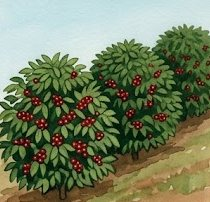
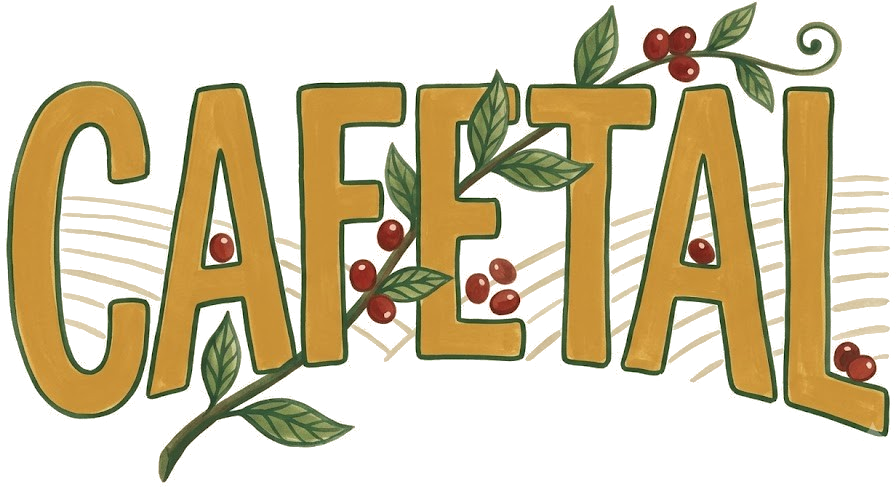
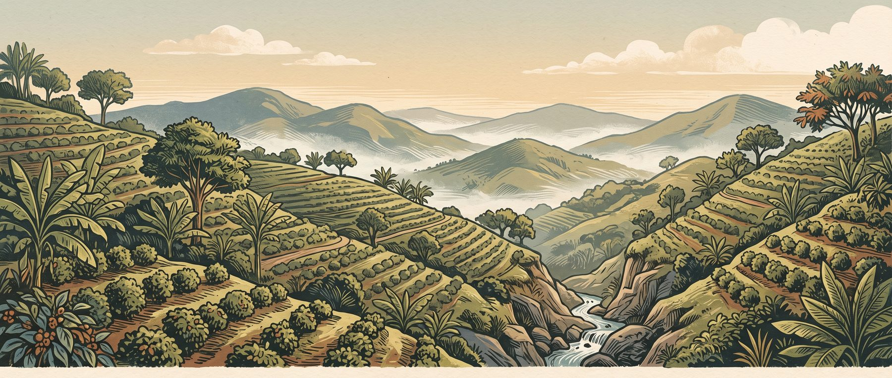
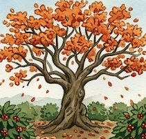
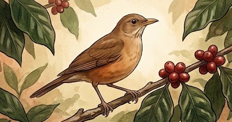
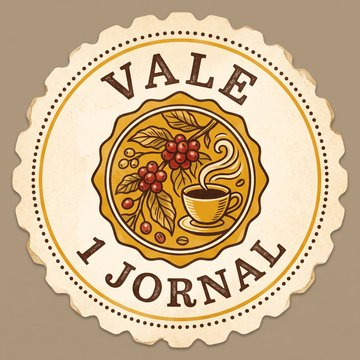

Una finca en la ladera
Cada persona dibuja en su hoja, una cuadrícula de 8 × 5 casillas cruzada por curvas de nivel. Los surcos van paralelos a la curva y el agua siempre corre cuesta abajo.
Ludens Docere presenta

Draw & write en las laderas de Costa Rica

Te toca una finca en la ladera y cuatro rondas, de la floración a la cogida, para convertirla en el cafetal más productivo y mejor cuidado de tu zona. Escoge cartas del centro, dibuja surcos que siguen las curvas de nivel, cuida la quebrada, siembra sombra… y deja espacio para la fauna.

Cada persona dibuja en su hoja, una cuadrícula de 8 × 5 casillas cruzada por curvas de nivel. Los surcos van paralelos a la curva y el agua siempre corre cuesta abajo.

Los puntos grandes vienen de combinar bien: sombra junto al café, sotobosque protegiendo la quebrada, colmenas lejos del agua. Lo que puntúa es lo que se hace en una finca bien cuidada.

Variedades, árboles de sombra, fauna, el trabajo de la cogida y hasta las leyendas del camino. El diseño se validó jugando, con la asesoría del Instituto del Café de Costa Rica (ICAFE).
Al empezar, cada quien recibe una zona al azar. Todas usan las mismas reglas, pero cada una premia el doble en combos distintos.
Toma la hoja de tu zona, un lápiz y tus fichas de Jornal. La partida dura cuatro rondas, una por estación del café: Floración, Granazón, Maduración y Cogida.
Se revelan tantas cartas como personas haya. Por turnos, cada quien toma una gratis y el hueco se repone del mazo, hasta reunir 4 cartas en la ronda. Las cartas de Jornal no se dibujan: se cambian por una ficha.
Al cierre de la ronda, cada quien traza en su hoja los elementos de sus cartas respetando las reglas de trazado. Si algo no cabe de forma legal, la carta se descarta. La Floración regala un surco y la Cogida, una ficha de Jornal.
Después de la Cogida, cada quien revisa su terreno y encierra en un círculo los grupos de casillas que cumplen un combo de su hoja. Un mismo combo puede puntuar varias veces si los grupos no comparten casillas.

Tienen la forma de los antiguos vales de café. Sirven para renovar todas las cartas del centro de draft cuando nada te sirve, para repetir un elemento que ya dibujaste y para hacer tratos con el resto de la mesa. Una vez por partida, además, puedes gastar una para comprar una carta extra o cambiar una carta con otra persona.
El empate lo gana quien encerró más combos; si persiste, quien tenga la quebrada mejor protegida.
Las 70 cartas del juego, cada una con su ilustración. Toca una para ver qué es y cómo se dibuja.
Cuando cae la noche
De regreso de la cogida, por el camino de la finca, se cuentan otras historias. La Segua, el Cadejo y la Llorona aparecen en el mazo como cartas de adorno: se dibujan en cualquier casilla libre, no cuentan para ningún combo y suman al Bono de variedad junto con la fauna y las flores.
CAFETAL está en su versión de prueba (V3). Los archivos para imprimir se publican aquí en cuanto quede lista la edición final.